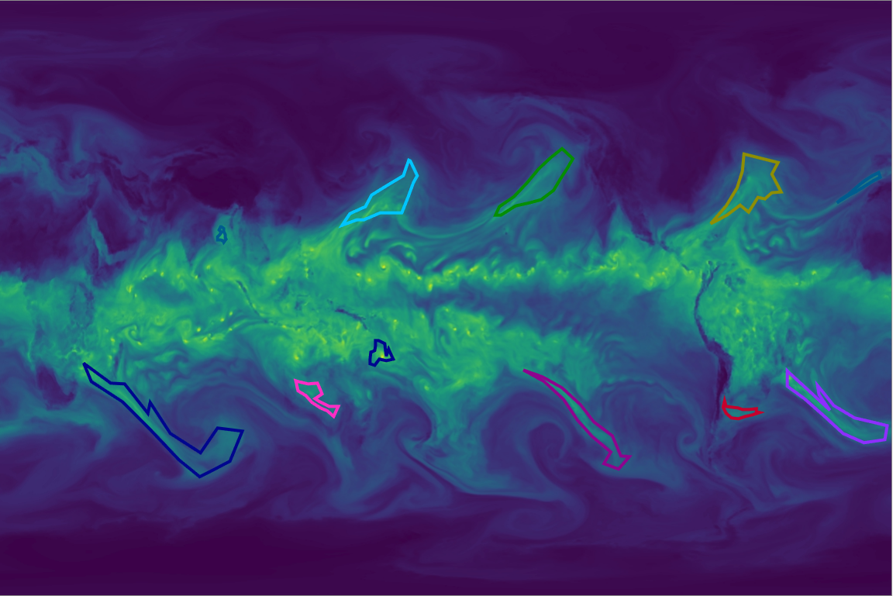

Labeling Instructions This tool will help create ground truth labeled data for the ClimateNet project. The tool is based on the open-source LabelMe project released by MIT. The current goal is to label Atmospheric Rivers (ARs) and Tropical Cyclones (TCs) on simulated climate output from the 25km CAM5.1 climate model. As a first step, users will work with images of the integrated water vapor field and use the tool to draw n-sided polygons around events of interest and indicate the type of event (TC or AR) for each polygon. The number 'n' is the user's choice, depending on how complex the shape of the event is and how precise the user wishes the boundary to be. We recommend O(10) points for each event. When you enter the tool, an image from the database will be randomly selected and shown. You help create ground truth labels by drawing polygons around and annotating as many atmospheric rivers and tropical cyclones as possible. Note that images will contain previously labeled events, which are meant to offer you with examples to get started. Please modify pre-existing labels or delete and replace them as you deem fit to accurately indicate the events present in the image. Once you have completed labeling all events in an image, you can view a new image by pressing the "show next image" button. The following steps describe how to label an object:
1. Start by pressing the left
mouse button at some point along the boundary of the object.
|
 Example image with labels |
|
Examples Good object labels: Bad object labels: | ||
Labeling Guidelines The following are some recomendations for how to provide annotations that are as useful as possible. View the entire image: Make sure that your browser occupies the entire screen and that you scroll to see the entire image. If you label an object on the edge of your browser, make sure to scroll so that the entire object is visible. Follow the object outline: Click on top of the object boundary so that the polygon accurately delineates the object outline. The ideal outline should be good enough for somebody to recognize the object just by seeing the drawn polygon. Labeling occluded objects: Sometimes objects will be only partially visible. This is especially true for atmospheric rivers. We recommend in these cases to complete the boundary as if they were not occluded. Labeling small events: Sometimes events like TCs will be small and difficult to label accurately without zooming in. Zoom in on the image with buttons in the uppermost block to the left of the image. |
||
Advanced features Delete segments: If you want to delete one segment
of the polygon before finishing the polygon, press the Modify control points: Once you have finished a polygon, you can modify individual control points. If you click on top of the polygon, the control points will appear. You can select one of the control points (hold the left mouse button down) and move it to a new position. Then click anywhere in the image to deselect the polygon. This will also save the modified polygon. Delete entire polygon: Select the polygon. You will have the option to delete the polygon. | ||
Questions? Feedback? Comments?
Contact us at <kkashinath,prabhat,mudigonda,kevin_yang,aalbert>lbl.gov